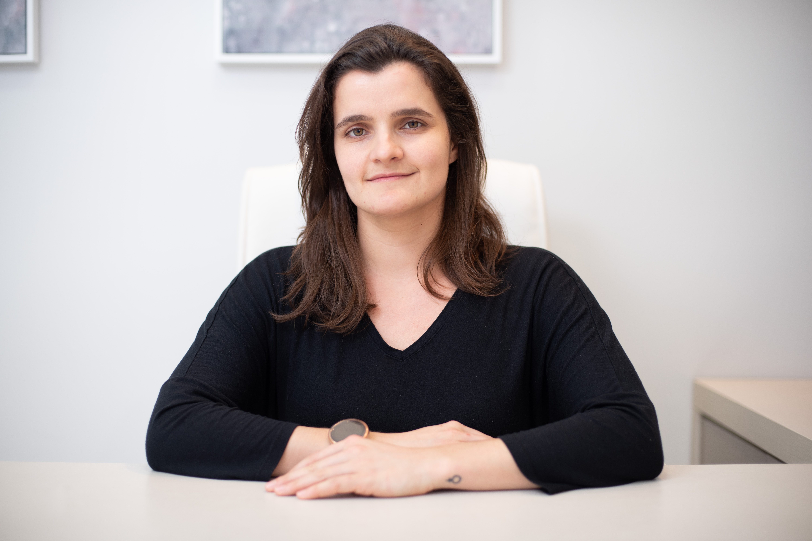

|  | Juliana Coelho StahelinFarmacêutica - Especialista em Saúde da Família Florianópolis, Santa Catarina, Brasil |
Farmacêutica formada pela Universidade Federal de Santa Catarina (UFSC). Especialista em Saúde da Família pelo programa de Residência Multiprofissional em Saúde da Família da UFSC e Prefeitura Municipal de Florianópolis (PMF). Atualmente farmacêutica na Prefeitura Municipal de Águas Mornas/SC, onde atuo em Unidade Básica de Saúde.
| 2020-2022 | Residência Multiprofissional em Saúde da Família |
| 2012-2019 | Graduação em Farmácia |
| 2015-2016 | Intercâmbio Acadêmico - Ciência Sem Fronteiras, Saúde Pública |
| Português | Fluente - língua materna |
| Inglês | Avançado |
| Francês | Básico a intermediário |
| Espanhol | Básico |
|